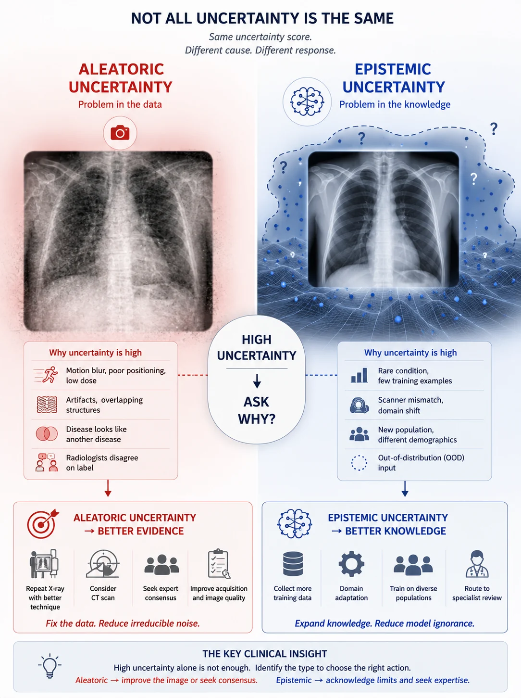
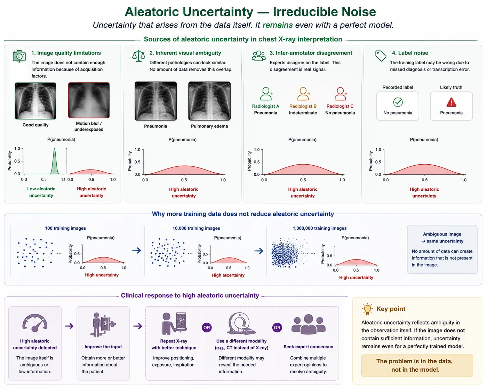
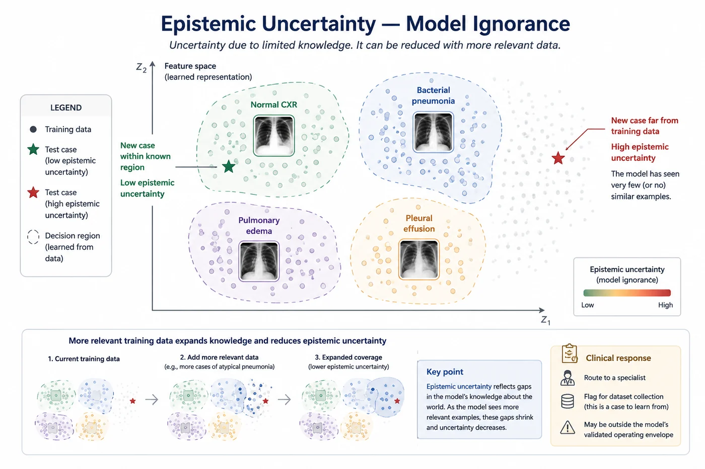
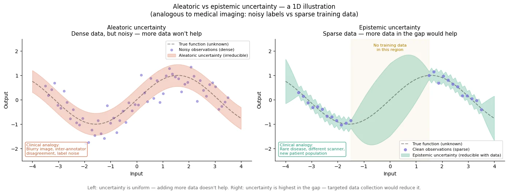
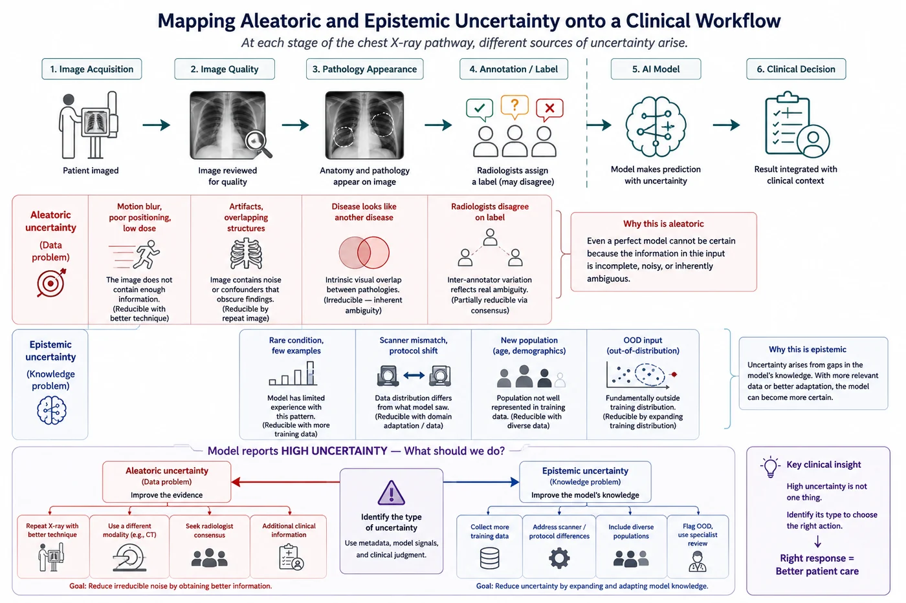

Session 2 — Aleatoric vs Epistemic Uncertainty 🔬¶
Part 1 — Foundations
Not all uncertainty is the same. Some of it can be reduced with more data, better tools, or more training. Some of it cannot — it is irreducible noise baked into the world. Knowing which type you're dealing with completely changes the clinical response.

🔗 Bridge from Session 1¶
In Session 1 we established that a model knowing when it doesn't know is more clinically valuable than one that's always confident. But "not knowing" is not a monolithic thing. A model might be uncertain because the image is genuinely ambiguous — blurry, poorly positioned, showing an unusual presentation. Or it might be uncertain because it hasn't seen enough cases like this one to have learned a reliable pattern. These are different problems with different solutions. This session gives you the language and the intuition to tell them apart.
What you'll learn in this session¶
- The distinction between aleatoric and epistemic uncertainty
- Why this distinction is clinically actionable — different types call for different responses
- Where each type of uncertainty comes from in a medical imaging workflow
- The formal probabilistic framing — just enough to understand what comes later
- How out-of-distribution inputs represent the extreme case of epistemic uncertainty
🎲 1. Aleatoric uncertainty — irreducible noise¶
Aleatoric uncertainty comes from the data itself. It is the uncertainty that remains even if you have a perfect model — because the information needed to make a certain prediction simply isn't there.
The word comes from the Latin alea — a die. Rolling a die is the classical example of aleatoric uncertainty: even with perfect knowledge of physics, the outcome is unpredictable because small perturbations in initial conditions make the trajectory chaotic. You can't reduce the uncertainty by studying dice harder.
In medical imaging, aleatoric uncertainty appears in several forms:
- Image quality issues: motion blur, poor positioning, underexposure — the image physically doesn't contain enough information to make a certain diagnosis
- Inherent ambiguity: some pathologies genuinely look like other pathologies. Early-stage pneumonia can look like pulmonary edema. A small nodule can look like a vessel cross-section. No amount of training data eliminates this visual overlap.
- Inter-annotator disagreement: when experienced radiologists disagree on the label for an image, that disagreement is a real signal about the image's ambiguity — not just human error. A model trained on such images inherits that ambiguity.
- Label noise: the training label may simply be wrong — a missed diagnosis or a transcription error — which introduces irreducible noise into the learning signal.
Critically, aleatoric uncertainty does not decrease as you collect more training data. If the image is blurry, showing the model a million more images won't help it read that particular blurry image better. The uncertainty is in the input, not in the model.
🏥 Clinical response to aleatoric uncertainty
When aleatoric uncertainty is high, the right response is to improve the input — request a repeat image with better technique, order a different imaging modality (CT instead of X-ray), or seek expert consensus among multiple radiologists. The problem is in the data, not the model.

Aleatoric uncertainty arises from ambiguity in the data itself, including image quality limitations, visual overlap between diseases, disagreement among experts, and label noise. Because the missing information is inherent to the observation, collecting additional training data does not eliminate this uncertainty. Instead, reducing aleatoric uncertainty requires improving the input—for example, by repeating the scan, using a different imaging modality, or seeking expert consensus.
🧠 2. Epistemic uncertainty — model ignorance¶
Epistemic uncertainty comes from the model — from gaps in its knowledge. It is the uncertainty that arises because the model hasn't been trained on enough relevant data to have learned the right patterns.
The word comes from the Greek episteme — knowledge. Epistemic uncertainty is uncertainty that could be reduced with more knowledge — more training data, better training, or a different model architecture. It reflects the model's ignorance rather than the world's irreducible noise.
In medical imaging, epistemic uncertainty appears when:
- Rare diseases or rare presentations: the model has seen very few examples of this condition, so its learned representation is unreliable
- Scanner or protocol differences: the model was trained on images from one scanner type and is being deployed on images from a different one — the feature patterns it learned may not transfer
- Demographics: a model trained predominantly on adult chest X-rays may have high epistemic uncertainty on pediatric images, simply because it hasn't seen enough of them
- Out-of-distribution inputs: anything sufficiently different from the training distribution will trigger epistemic uncertainty — the model is in territory it hasn't mapped
Critically, epistemic uncertainty decreases as you collect more relevant training data. If the model hasn't seen enough cases of viral pneumonia, training it on more viral pneumonia cases reduces its uncertainty on those presentations. The problem is in the model's knowledge, and knowledge can be expanded.
🏥 Clinical response to epistemic uncertainty
When epistemic uncertainty is high, the right response is to route the case to a specialist with relevant expertise, flag it for dataset collection (this is a case the model should learn from), or acknowledge that this type of case is outside the AI's validated operating envelope. The problem is in the model's training, which can be improved over time.

Epistemic uncertainty reflects gaps in a model's knowledge. Common clinical presentations lie within well-sampled regions of the training distribution and are associated with lower uncertainty, whereas rare diseases, unusual presentations, or out-of-distribution cases may fall outside these regions and produce higher uncertainty. Expanding the training dataset can reduce this form of uncertainty.
⚖️ 3. The formal probabilistic framing¶
This section introduces a little notation — just enough to understand how Phase 2 algorithms talk about the two types of uncertainty. Don't worry if the math feels unfamiliar; the intuition is what matters here.
In a Bayesian framework (which we'll explore properly in Session 4), the full predictive distribution for a new input $x^*$ is:
$$p(y^* \mid x^*, \mathcal{D}) = \int p(y^* \mid x^*, w) \cdot p(w \mid \mathcal{D}) \, dw$$
This integral averages predictions over all plausible model weights $w$, weighted by how likely each weight configuration is given the training data $\mathcal{D}$.
The total uncertainty in this prediction can be decomposed:
$$\underbrace{\mathbb{H}[y^* \mid x^*, \mathcal{D}]}_{\text{total uncertainty}} = \underbrace{\mathbb{I}[y^*; w \mid x^*, \mathcal{D}]}_{\text{epistemic}} + \underbrace{\mathbb{E}_{p(w|\mathcal{D})}[\mathbb{H}[y^* \mid x^*, w]]}_{\text{aleatoric}}$$
Reading this in plain language:
- Total uncertainty ($\mathbb{H}$): the entropy of the full predictive distribution — how spread out is our prediction?
- Epistemic (mutual information $\mathbb{I}$): how much does the prediction change as we vary the model weights? High when different plausible models disagree — the model hasn't seen enough data to converge.
- Aleatoric (expected entropy $\mathbb{E}[\mathbb{H}]$): how uncertain is each individual model, on average? High when even a perfect model can't be certain — the signal in the data is inherently noisy.
You don't need to memorize this formula. What matters is the intuition: epistemic uncertainty comes from disagreement between plausible models; aleatoric uncertainty is what remains even when models agree.
We will revisit these formulas concretely in upcoming notebooks.

Aleatoric uncertainty (left) arises from noise or ambiguity in the observations themselves and remains high even when data are abundant. Epistemic uncertainty (right) arises from gaps in the model's knowledge and is largest in regions where training data are sparse or absent. Additional data can reduce epistemic uncertainty, but not aleatoric uncertainty.
🗺️ 4. Mapping the two types of uncertainty onto a clinical workflow¶
It helps to trace a chest X-ray from acquisition to diagnosis and ask: at each step, where does each type of uncertainty enter?
| Stage | Source of uncertainty | Type | Reducible? |
|---|---|---|---|
| Image acquisition | Motion blur, poor positioning, low dose | Aleatoric | ✅ Better technique |
| Image quality | Artifacts, overlapping structures | Aleatoric | ✅ Repeat image |
| Pathology appearance | Disease looks like another disease | Aleatoric | ❌ Irreducible overlap |
| Annotation | Radiologists disagree on label | Aleatoric | Partially — consensus helps |
| Rare condition | Few training examples | Epistemic | ✅ More training data |
| Scanner mismatch | Different from training scanner | Epistemic | ✅ Domain adaptation |
| New population | Different age, demographics | Epistemic | ✅ Diverse training |
| OOD input | Fundamentally outside training distribution | Epistemic | ✅ Expand training |
The table reveals an important pattern. Aleatoric uncertainty originates in the evidence itself — the image may be noisy, ambiguous, or difficult even for an expert. Epistemic uncertainty originates in the model's knowledge — the case lies outside what the model has learned from its training data. This distinction is not merely theoretical. It directly determines the appropriate clinical response.
Scenario A — High aleatoric uncertainty¶
A chest X-ray is technically poor: the patient moved during acquisition, the exposure is suboptimal, and important structures are difficult to interpret. The model reports high uncertainty. Further analysis shows that the epistemic component is low — different plausible models largely agree with one another — but the aleatoric component is high. In other words, the model is not confused because it lacks knowledge. It is uncertain because the image itself does not contain enough reliable information.
Clinical response: Improve the evidence. Repeat the X-ray with better positioning and technique, seek expert consensus, or order a CT scan if urgency is high. The AI has done its job by identifying that the input is unreliable.
Scenario B — High epistemic uncertainty¶
A different chest X-ray is technically excellent. The image is clear, well exposed, and contains no obvious artifacts. Yet the model still reports high uncertainty. This time the aleatoric component is low, but the epistemic component is high. Different plausible model configurations disagree substantially about the diagnosis. In other words, the image is not the problem. The model is. Perhaps the patient belongs to a demographic underrepresented in the training data. Perhaps the disease presentation is rare. Perhaps the image comes from a scanner or institution the model has never encountered.
Clinical response: Acknowledge the limits of the model's knowledge. Route the case to a specialist, avoid relying heavily on the AI prediction, and flag the case for future dataset collection and model improvement.
The key clinical insight¶
Two cases can produce the same total uncertainty score while requiring completely different actions.
- High aleatoric uncertainty → improve the evidence.
- High epistemic uncertainty → improve the knowledge.
- High total uncertainty alone is not enough. The source of the uncertainty determines the response.
This is why uncertainty decomposition matters. It transforms uncertainty from a warning signal into a clinically actionable tool.

Aleatoric uncertainty arises from limitations in the data itself, including image acquisition issues, image quality artifacts, intrinsic diagnostic ambiguity, and disagreement between annotators. Epistemic uncertainty arises from limitations in the model's knowledge, including rare conditions, scanner shifts, new patient populations, and out-of-distribution inputs. Distinguishing between these uncertainty types is clinically important because they imply different actions: aleatoric uncertainty calls for better evidence, whereas epistemic uncertainty calls for greater expertise or expanded model knowledge.
📚 7. Recommended reading¶
The papers below are among the most influential and widely cited references for understanding aleatoric and epistemic uncertainty.
Aleatory or Epistemic? Does It Matter?
Der Kiureghian & Ditlevsen, 2009 - Structural Safety
A foundational treatment of the distinction between uncertainty caused by inherent variability and uncertainty caused by incomplete knowledge. Although written for risk and reliability analysis, it provides the conceptual roots of the terminology now widely used in machine learning.
What Uncertainties Do We Need in Bayesian Deep Learning for Computer Vision?
Kendall & Gal, 2017 - NeurIPS
The landmark deep-learning paper for this distinction. It explains aleatoric uncertainty as observation noise and epistemic uncertainty as uncertainty about the model, then combines both within a Bayesian deep-learning framework for computer-vision tasks.
Decomposition of Uncertainty in Bayesian Deep Learning for Efficient and Risk-sensitive Learning
Depeweg et al., 2018 - ICML
A direct study of how predictive uncertainty can be decomposed into aleatoric and epistemic components. It also demonstrates why separating them matters for decisions such as active learning and risk-sensitive control.
Aleatoric and Epistemic Uncertainty in Machine Learning: An Introduction to Concepts and Methods
Hüllermeier & Waegeman, 2021 - Machine Learning
A comprehensive and highly cited conceptual review. It examines the meaning, sources, representation, and limitations of both uncertainty types, making it especially useful after reading the shorter Kendall and Gal paper.
✅ Session summary¶
| Concept | Key takeaway |
|---|---|
| 🎲 Aleatoric | Irreducible — comes from the data. Blurry images, inherent ambiguity, label noise. More data won't help. |
| 🧠 Epistemic | Reducible — comes from the model. Rare conditions, scanner mismatch, OOD inputs. More relevant data helps. |
| 📐 Decomposition | Total = Epistemic (MI) + Aleatoric (expected H) |
| 🔁 Actionability | Same total uncertainty, different component → completely different clinical response |
➡️ Next: Session 3 — Uncertainty in Clinical Practice 🩺
Session 1 showed why confident wrong answers are dangerous. Session 2 separated uncertainty into aleatoric and epistemic components. Session 3 moves from machine learning back to medicine: how clinicians already reason probabilistically, how differential diagnosis works, and why a useful AI system should communicate uncertainty in a way that supports clinical decision-making.